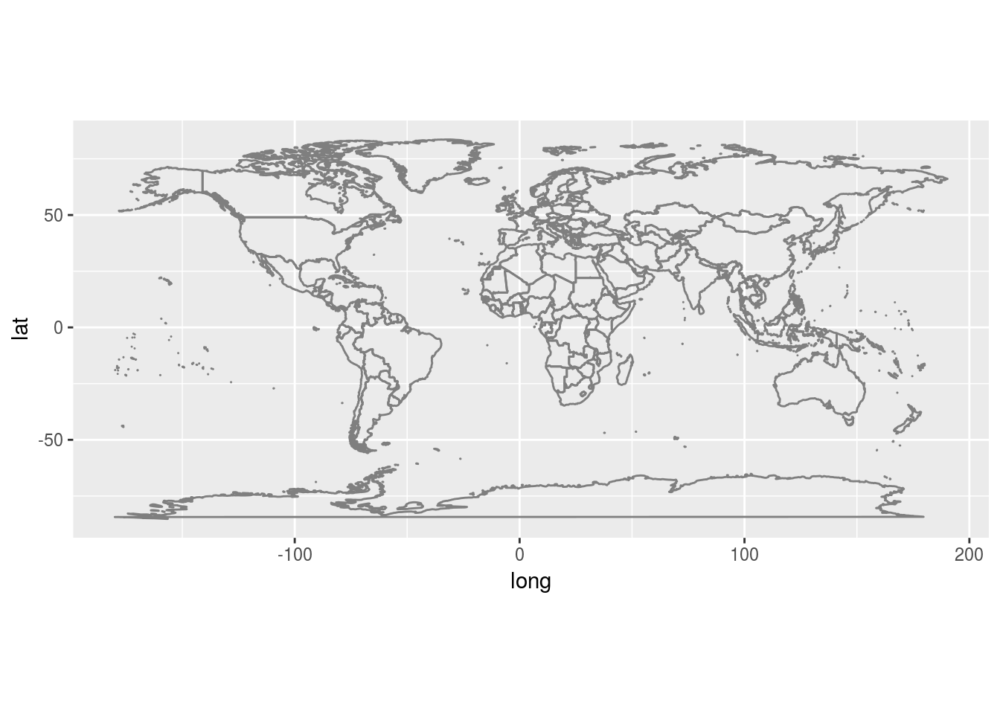
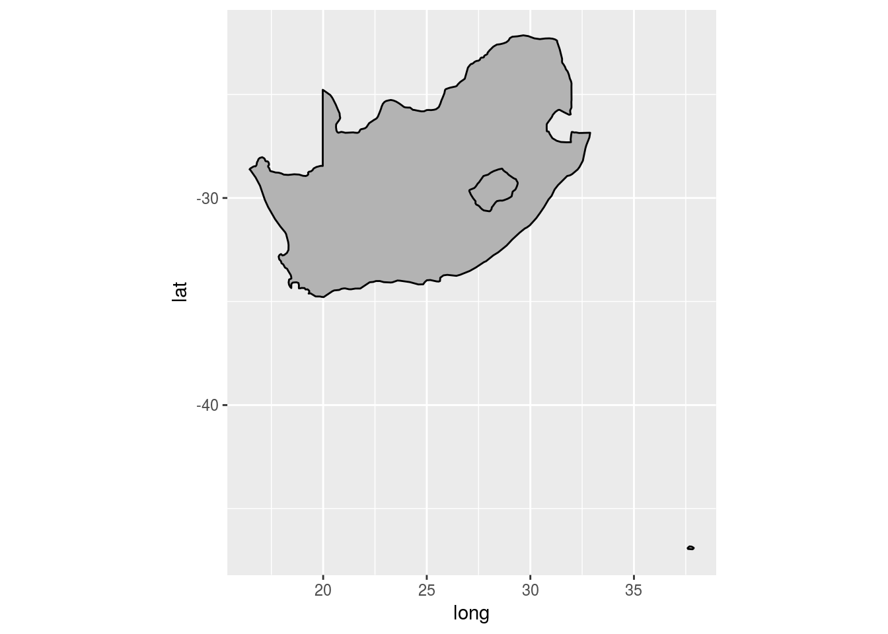
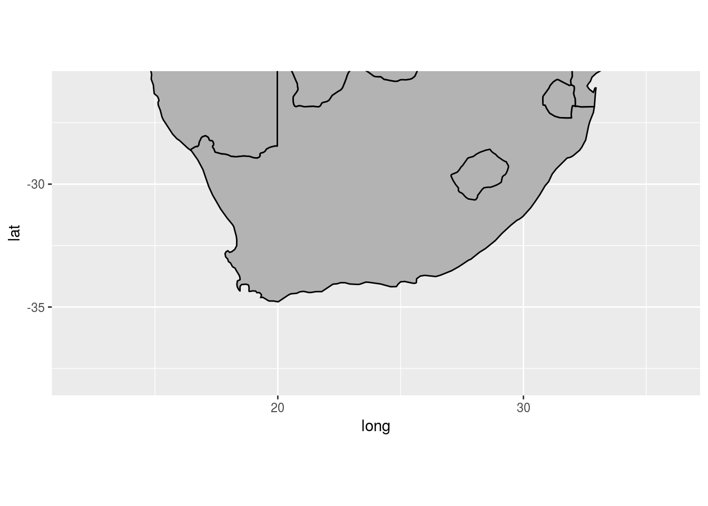
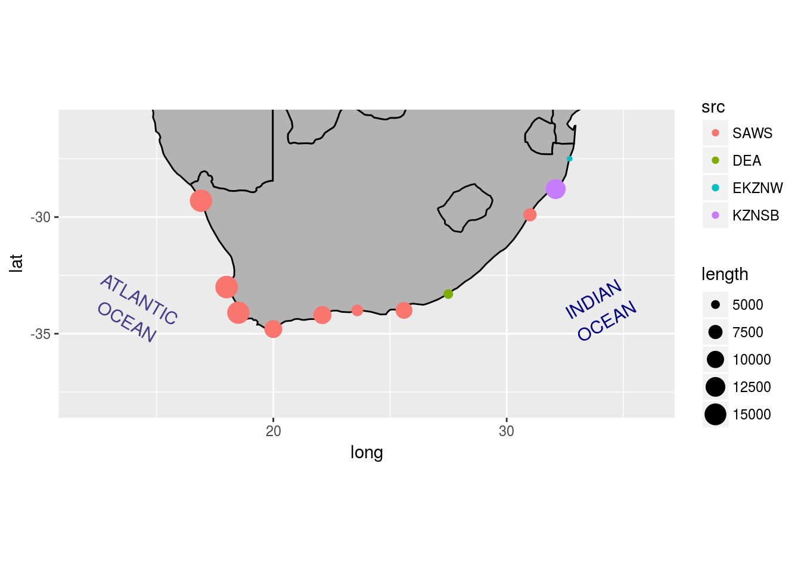
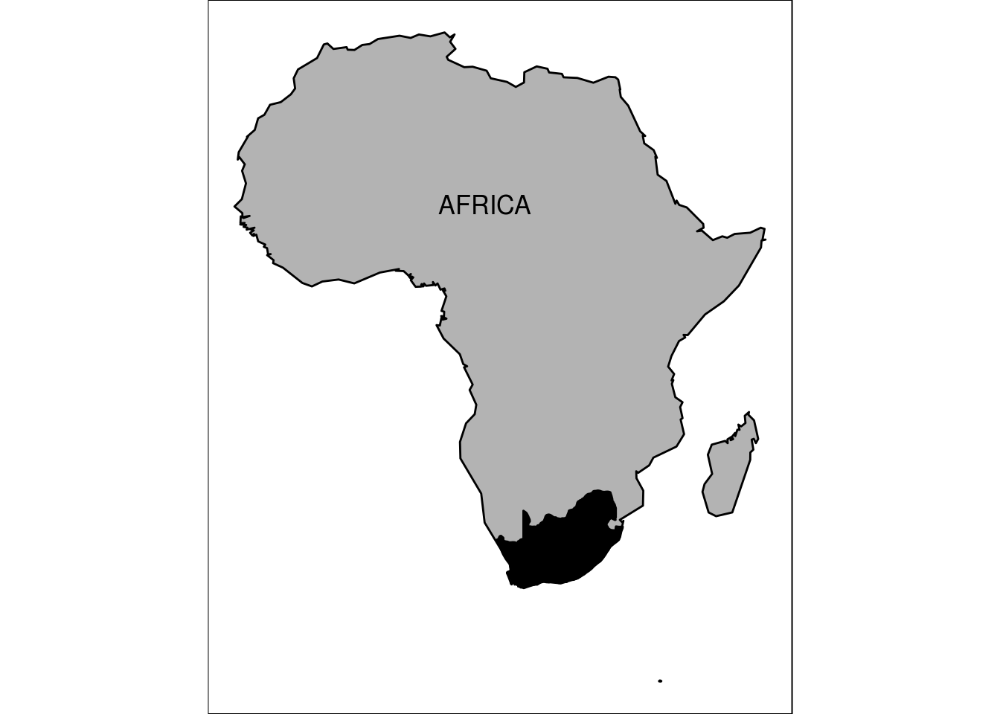
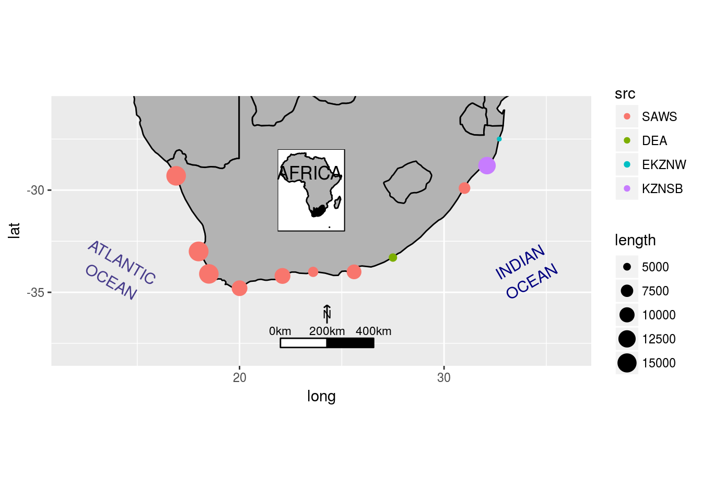
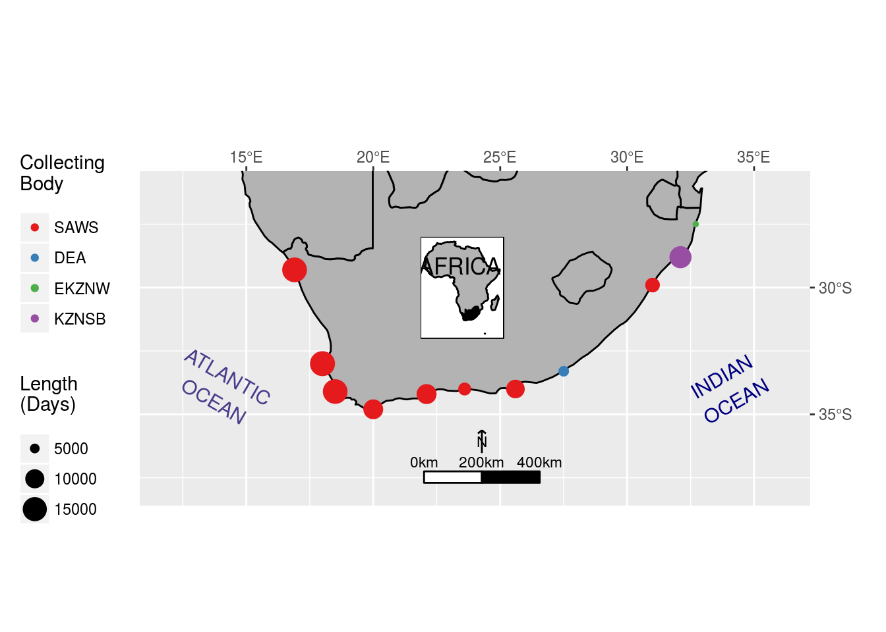

Chapter 9 Publication quality
“How beautiful the world was when one looked at it without searching, just looked, simply and innocently.”
— Hermann Hesse, Siddartha
“You can’t judge a book by it’s cover but you can sure sell a bunch of books if you have a good one.”
— Jayce O’Neal
9.1 Built in shape files
In the first module today we learned how to create a map of South Africa using a shape files we had saved on our computer. We are now going to learn how to use the shape files that were downloaded onto our computer with the tidyverse.
# Load libraries
library(tidyverse)
library(gridExtra)
# Load SACTN site data
load("data/site_list.Rdata")
# Load the function for creating scale bars
source("functions/scale.bar.func.R")
# The global shape file
ggplot() +
borders() +
coord_equal()
Jikes! It’s as simple as that to load a map of the whole planet. Usually we are not going to want to make a map of the entire planet, so let’s see how to focus on just South Africa.
ggplot() +
borders(regions = "South Africa",
colour = "black", fill = "grey70") + # Set colour and fill
coord_equal()
Surprisingly, the international borders for South Africa do not account for Swaziland. That is an error. We also see in the above map that the exclusion of the bottom parts of the countries bordering on South Africa give it the appearance of an island. This isn’t great, so let’s consider a different option for selecting the area around South Africa.
south_africa <- ggplot() +
borders(fill = "grey70", colour = "black") +
coord_equal(xlim = c(12, 36), ylim = c(-38, -26))
south_africa
There we have a much nicer looking map of southern Africa. Up next we will remind ourselves how we add points and labels, then we will see how to add scale bars and insets.
9.2 Bells and whistles
A map is almost always going to need some labels and some other visual cues. We saw in the previous chapter how to add labels, below we will see how this may differ if we want to add just one label at a time. This can be useful if each label needs to be different from all other labels for whatever reason.
# Note that because we saved out previous
# map as 'south_africa`, we may now add
# directly to it
south_africa_labels <- south_africa +
# Add some points
geom_point(data = site_list, aes(x = lon, y = lat, colour = src, size = length)) +
# geom_text(data = site_list, aes(x = lon, y = lat, label = site), vjust = 1.5) +
annotate("text", label = "INDIAN\nOCEAN", x = 34.00, y = -34.0,
size = 4.0, angle = 30, colour = "navy") +
annotate("text", label = "ATLANTIC\nOCEAN", x = 14.00, y = -34.0,
size = 4.0, angle = 330, colour = "darkslateblue")
south_africa_labels
With our fancy labels and points added, let’s next insert a scale bar. There is no default scale bar function in the tidyverse, rather we will need to import one that has been created by a kind Samaritan.
# Add a scale bar to our map
south_africa_scale <- south_africa_labels +
scaleBar(lon = 22.0, lat = -37.7, distanceLon = 200, distanceLat = 50,
distanceLegend = 90, dist.unit = "km", arrow.length = 100,
arrow.distance = 130, arrow.North.size = 3)
south_africa_scale
9.3 Insetting
In order to inset a smaller map inside of a bigger map, we first need to create the smaller map. Let’s make a map of Africa for this purpose. The built in shape files aren’t going to be terribly useful for this, so we will use a shape files of Africa that we already have saved on our computer.
# Load Africa shape
load("data/africa_coast.Rdata")
# Create map
africa <- ggplot(data = africa_coast, aes(x = lon, y = lat)) +
geom_polygon(aes(group = group), colour = "black", fill = "grey70") +
borders(regions = "South Africa", colour = "black", fill = "black",
ylim = c(-34, -28)) +
annotate("text", x = 15, y = 15, label = "AFRICA", size = 4.5) +
theme_void() +
theme(plot.background = element_rect(fill = "white", colour = "black")) +
coord_equal()
africa
And now to inset this map of Africa into our map of South Africa we will need to learn how to create a ‘grob’. This is very simple and does not require any extra work on our part. Remember that ggplot2 objects are different from normal objects (i.e. dataframes), and that they have their own way of storing and accessing data. In order to convert any sort of thing into a format that ggplot understands we convert it into a grob, as shown below.
south_africa_inset <- south_africa_scale +
annotation_custom(grob = ggplotGrob(africa),
xmin = 21, xmax = 26,
ymin = -32, ymax = -28)
south_africa_inset
9.4 Rounding it out
There are a lot of exciting things going on in this figure. To round out this chapters let’s tweak the label and legend titles to make the figure more presentable.
south_africa_final <- south_africa_inset +
scale_x_continuous(breaks = seq(15, 35, 5),
labels = scales::unit_format("°E", sep = ""),
position = "top") +
scale_y_continuous(breaks = seq(-35, -30, 5),
labels = c("35°S", "30°S"),
position = "right") +
scale_color_brewer(name = "Collecting\nBody", palette = "Set1") +
scale_size_continuous(name = "Length\n(Days)", breaks = c(5000, 10000, 15000)) +
labs(x = "", y = "") +
theme(legend.position = "left")
south_africa_final
And lastly we save the fruits of our labours.
ggsave(plot = south_africa_final, filename = "figures/south_africa_final.pdf",
height = 6, width = 8)